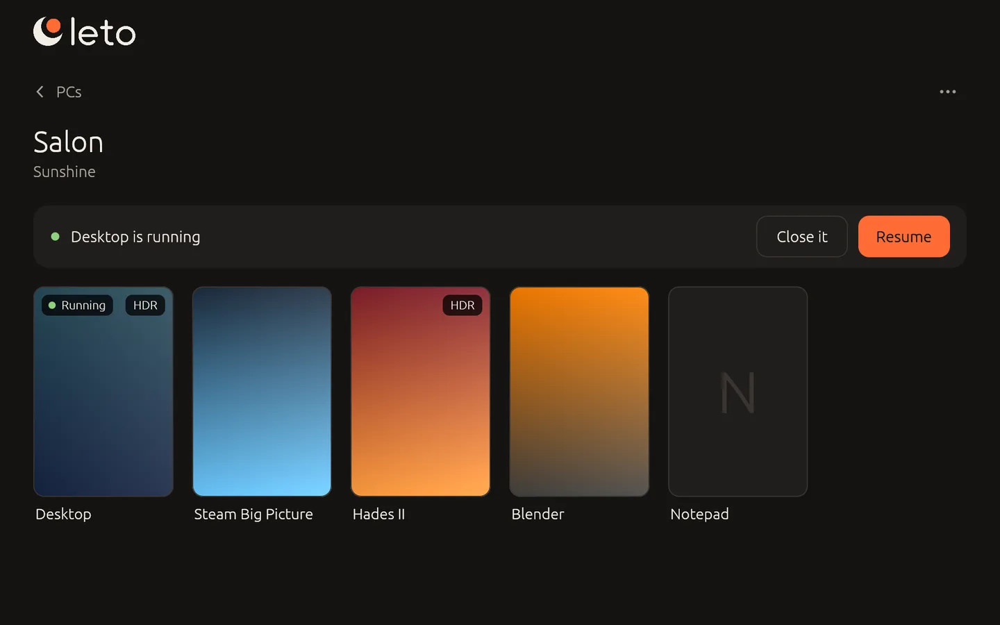
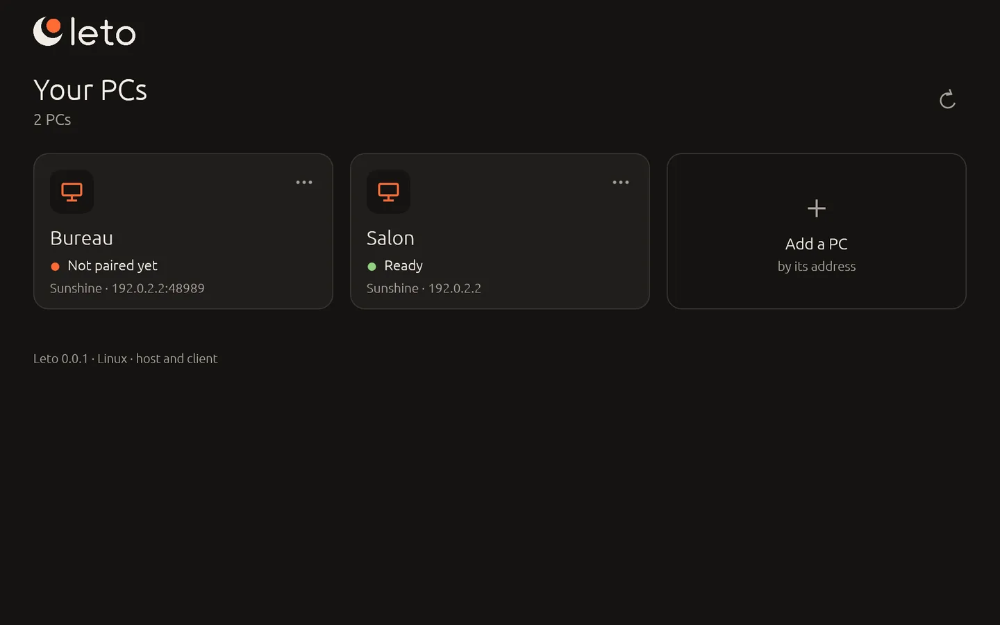
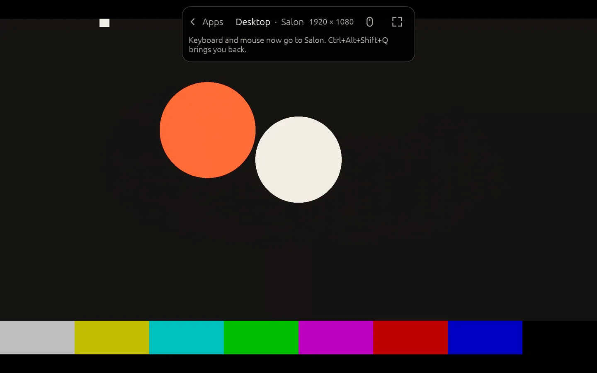
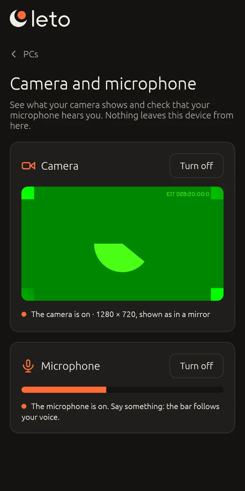
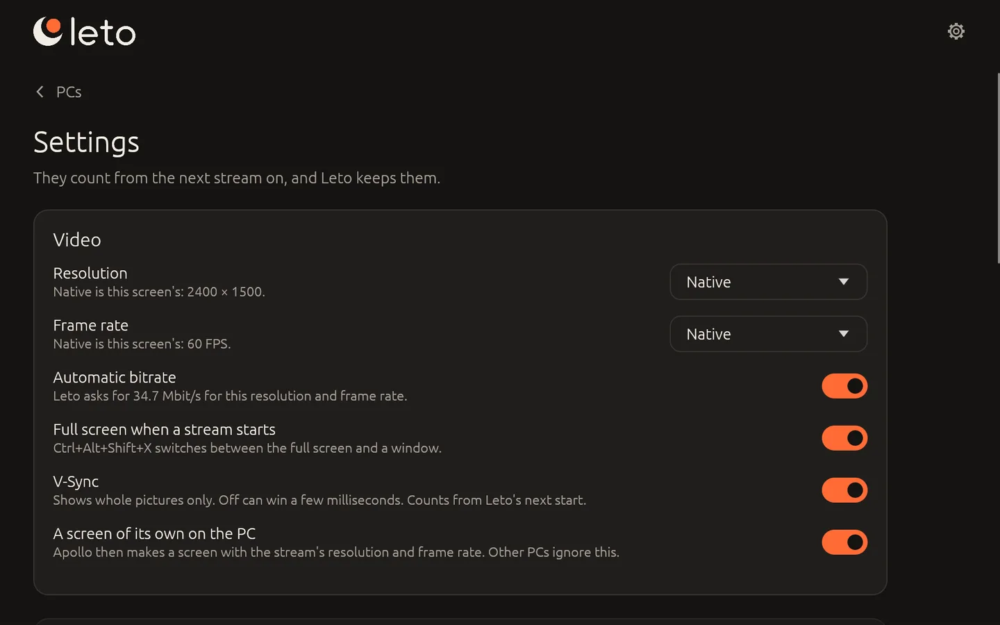

One app
The same Leto, with the same interface, on Windows, in the browser and on Android. In time, on the shared PC's side too.
In development
One app, written in Rust, for the PC you share and for every device you reach it from: desktop, phone and browser.
Leto speaks the Moonlight protocol. It works with PCs that run Apollo or Sunshine, and builds on the work of their communities.

Sharing a PC today takes a server, a client for the desktop, another for the phone and one more for the browser, and none of them look alike. Leto sets out to replace them with a single app.
The same Leto, with the same interface, on Windows, in the browser and on Android. In time, on the shared PC's side too.
It should work without opening a settings page. The settings Moonlight users expect stay within reach, behind a cog.
The goal: the microphone and camera of the device in your hand show up on the PC as an ordinary microphone and webcam.
Leto connects to PCs that run Apollo or Sunshine. Later, the Leto host is meant to accept existing Moonlight and Artemis clients.
These screenshots come from the app in development. The PCs in them are the stand-in host used for tests, not a real gaming PC.




Leto is very young. Here, honestly, is what has been tried and what has not been yet.
The project, the interface, the brand, and the choice of the open-source projects Leto builds on.
DoneFind your PCs, pair, play with keyboard, mouse and gamepad, from the app or a browser. Send your microphone and camera.
In progressThe same Leto app on Android, with touch, the phone's keyboard, its microphone and its cameras. Next: decoding on the phone's hardware, for full-resolution streams.
StartedApollo ported to Rust, Windows first, with the camera and microphone received on the PC. The Leto app replaces Apollo's web configuration pages.
Not startedThere is no version to download yet. Versions will show up here as soon as they are published.
Each desktop archive holds the app, the command line and the web client. Its README.txt explains how to get started.
Free code signing provided by SignPath.io, certificate by SignPath Foundation.
In Greek mythology, Leto is the mother of Apollo and Artemis, the sun and the moon. Leto starts from the projects named after them, Apollo and Artemis, themselves born from Sunshine and Moonlight. The logo says it too: a crescent moon around a sun.